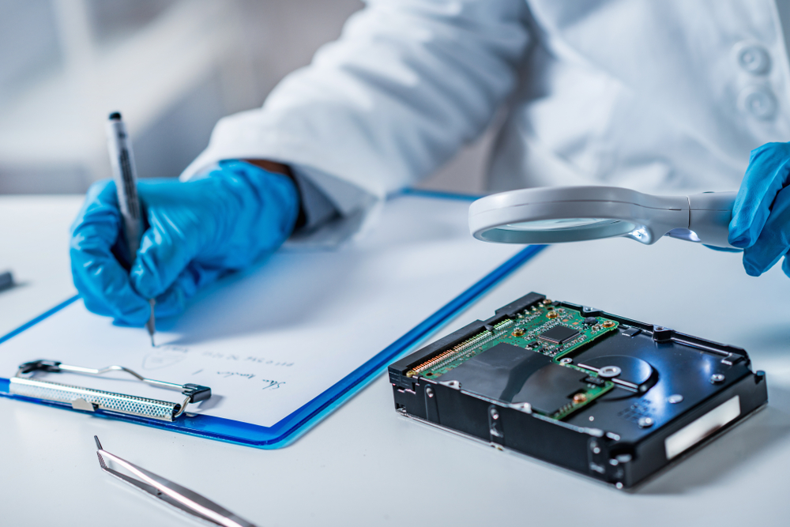

¿Qué es?

Es la disciplina que combina los elementos del derecho y la informática para recopilar y analizar datos de sistemas informáticos, redes, comunicaciones inalámbricas y dispositivos de almacenamiento de una manera que sea admisible como prueba en un tribunal de justicia.
Obviamente, cuando se ha producido un ataque cibernético, la recopilación de todas las pruebas relevantes es de suma importancia para responder a las preguntas que se describieron anteriormente. Sin embargo, ten en cuenta que el investigador forense está particularmente interesado en una evidencia en particular, que se conoce específicamente como “datos latentes“.
En el mundo de la Ciberseguridad, este tipo de datos (también conocidos como "datos ambientales") no se pueden ver ni acceder fácilmente a primera vista en la escena de un ataque cibernético. En otras palabras, se necesita un nivel mucho más profundo de investigación por parte del experto en informática forense para desenterrarlos.
Obviamente, estos datos tienen muchos usos, pero se implementaron de tal manera que el acceso a ellos ha sido extremadamente limitado.